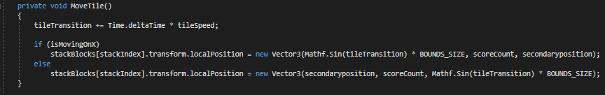
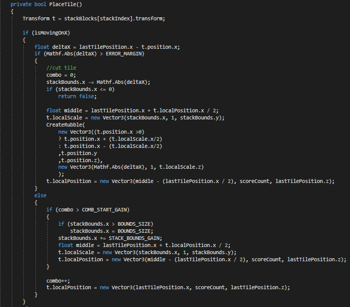
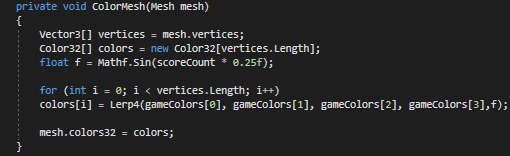
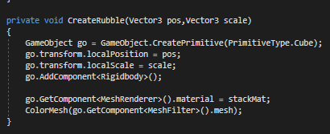

The project itself
This project was inspired by the official game "The Stack". The concept is very simple, there's a cube moving along the screen. When you tap the screen the cube will lock it's position. The goal is to try and line up the moving cube and the cube below perfectly. If the moving cube is placed slightly off, the part that doesn't match the position of the piece below will fall off. The next piece will always have the start size of the previous piece meaning that if you misplace a tile, your next tile will be smaller making it harder and harder to place the tiles correctly. The main part that made me want to make this prototype is the programming behind the game. At first I thought it would be very easy to build the game but in the end it turned out to be quite a challenge.
Moving the pieces
Moving the pieces alongside the screen was the first obstacle. I needed to find a way to efficiently move objects from left to right and back to forth whilst it still felt smooth. I ended up with a relatively simple fuction that smoothly moves the tiles alongside given coordinates.
Placing the pieces
Placing the pieces proved to be one of the harder challenges. Not because I simply had to lock it's position. But because I also had to pass on the information about whether it was placed correctly or not and if not, how big the piece of rubble should be that will fall off the tower. I ended up asking a good friend of mine which is a mastermind when it comes to math. Together we figured out a function that places the tiles and passes on the correct information to the other functions to make the game really come together and feel smooth.
The color scheme
To make the game more interesting I wanted every new piece to have a different color. To do this I made a function that takes an array of colors and interpolates between each one of them to make each change in color gentle.
Creating the rubble
Whenever a piece was slightly misplaced a piece of rubble needed to be spawned which has the size of the part of the piece that was misplaced. This ended up not being so hard to do since the main function with all the parameters was already made.
